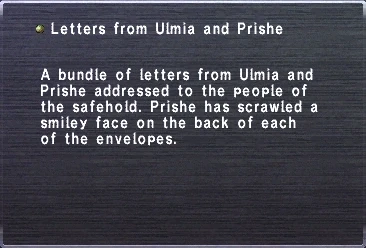

Level 75 reference · Zenith rules
Letters from Ulmia and Prishe


Description:
A bundle of letters from Ulmia and Prishe addressed to the people of the safehold. Prishe has scrawled a smiley face icon the back of each of the envelopes.
Used In Mission:
Obtained:
Reward from Cid in Metalworks upon defeating Dalham in Bibiki Bay, Cryptonberry Executor in Carpenter's Landing, and Boggelmann in Misareaux Coast as part of Promathia Mission 7-4: Calm Before the Storm.
Notes:
Used to gain initial access to Airship in Sealion's Den.
Adapted from Eden Wiki: Letters from ulmia and prishe · Contributors and history · CC BY-SA 4.0. Revision 45102. Layout, links and optional background text adapted for Zenith.